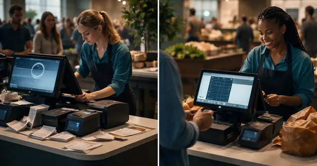
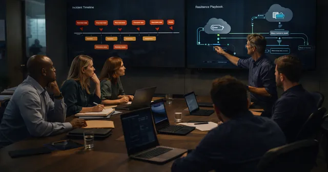
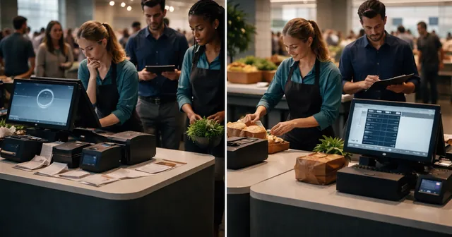
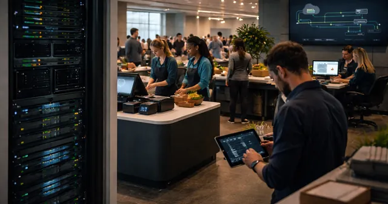
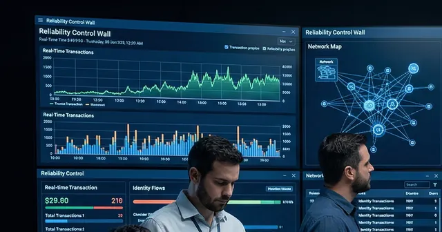
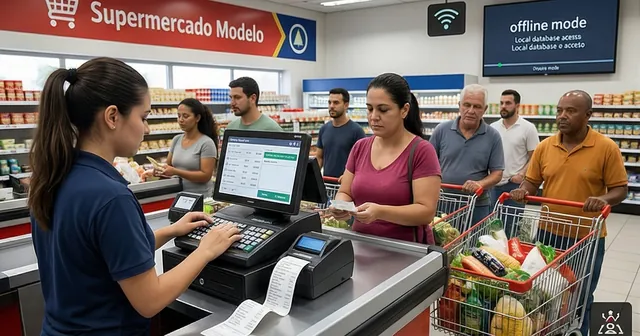
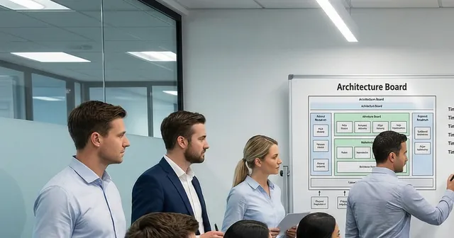

English · B2B
B2B articles
Twelve five-minute articles on offline-first systems and business continuity, published weekly from June 2027.
2 June 2027
The hidden risk of cloud-only systems
9 June 2027What really happens when the internet goes down in a business

16 June 2027Why most POS and ERP systems are not built for failure

23 June 2027Downtime is not a bug — it is a design decision
30 June 2027What is offline-first architecture and why it matters

7 July 2027Local-first vs cloud-first: a practical comparison
14 July 2027Designing systems that survive disconnection

21 July 2027Edge computing for real businesses

28 July 2027How we build systems that never stop

4 August 2027Where offline-first systems make the biggest impact

11 August 2027